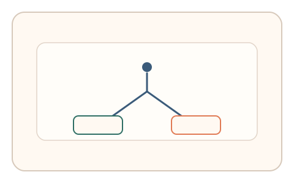
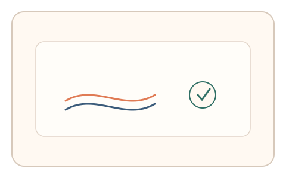

#119
Morphological Analysis - Combination Batches
已扩展
现实耦合分岔
根据当前交互状态随机分岔到不同微任务，以分岔前后预测误差与反应时验证真实性。
概念原文
任务中根据当前交互状态随机分岔到不同微任务，系统比较分岔前后的预测误差与反应时。任务结构为随机插入，信号形态为预测误差与反应时。
利用“实时状态分岔”打断脚本的固定策略。
研究背景
真实交互中存在不可预期的状态分岔，脚本策略容易被打断。利用实时状态触发分岔微任务，可检验用户对上下文的即时理解与反应一致性。
核心机制
- 监测当前交互状态并随机触发分岔。
- 进入不同的短微任务分支。
- 记录分岔前后的预测误差与反应时。
- 对任务内一致性进行判定。
用户流程
- 步骤 1：用户正常操作流程。
- 步骤 2：系统根据状态分岔到微任务。
- 步骤 3：系统比较误差与反应时并判定。
判定信号
预测误差
真实用户能基于上下文做出更准确判断。
反应时变化
分岔会引发可预测的反应时波动。
判定逻辑
误差与反应时需落在人类分布区间，且分岔前后变化合理；过度一致或无关联判异常。
对抗面
- 脚本固定分支策略快速应答
- 重放真实用户的分岔序列
防御与缓解
- 随机化分岔触发时机与任务类型
- 绑定实时上下文与短时状态
- 叠加轨迹与停顿信号
可达性与风险
提供简化分岔或可跳过选项，避免频繁打断体验。
- 分岔过多导致用户疲劳
- 上下文理解差异引发误判
可视化状态
状态 1：正常流程
用户处于正常交互流程。

状态 2：状态分岔
随机分岔进入不同微任务。

状态 3：误差判定
比较预测误差与反应时。
参考资料
Decision-making
说明分岔选择与即时决策机制。
Reaction time
说明反应时作为行为信号。